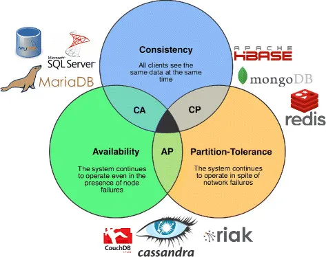
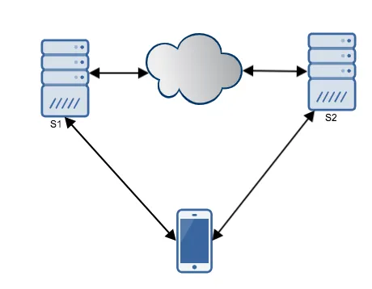

CAP Theorem

CAP theorem also known as Brewer’s theorem was introduced by computer scientist Eric Brewer at Symposium on Principles of Distributed computing in 2000. In CAP theorem, C stands for Consistency, A stands for Availability and P stands for Partition tolerance.
Consistency: Every read receives the most recent writes or an error. For consistency, any read operation that begins after a write operation completes must return that value, or the result of a later write operation.
In a consistent system, once a client writes a value to any server and gets a response, it expects to get that value (or a fresher value) back from any server it reads from.
Note that consistency, as defined in the CAP theorem is quite different from the consistency guaranteed in ACID database transactions.
Availability: Every request received by a non-failing node in the system must result in a response. Whether you want to read or write you will get some response back.
In an available system, if our client sends a request to a server and the server has not crashed, then the server must eventually respond to the client. The server is not allowed to ignore the client’s requests.
Partition tolerance: The system continues to operate despite an arbitrary number of messages being dropped(or delayed) by the network between nodes. When a network is partitioned, all messages sent from nodes in one component of the partition to nodes in another component are lost.
CAP theorem states that it is impossible for a distributed system to simultaneously provide more than two out of the above three guarantees.
To prove that: Link to heading
For example, suppose we have a very simple distributed system with only two server S1 and S2 and assume our distributed system is Consistent, Available and Partition tolerant all at the same time.

Suppose there is network failure, since our system is partition tolerant it suppose to work. During the network failure client sends a write request to server S1. S1 will receive the request and process it.
Our system is consistent, so S1 must update the value in S2 before confirming to the client but S1 cannot update S2 because there is a network failure. In this case, the request to S1 will timeout which means our system is not available.
If our system Available, S1 will respond to the client without waiting for an update in S2. If any client makes a read request to S2 for the same information it will receive older value not the result of recent write. This means our system cannot be consistent when it is available.
Above proves the CAP theorem.
All distributed system needs partition tolerance because no distributed system is safe from network failure. In presence of a partition tolerance, we can select one out of two options: Consistency and Availability.
CAP Theorem is frequently misunderstood that one has to choose two out of three guarantees all the times. In fact, one has to choose between Consistency and Availability only when there is a network partition or failure happens. In absence of network partition or network failures, both availability and consistency can be satisfied.
In presence of a partition, one is left with two options consistency and availability.
AP(Availability and Partition tolerance): When availability is chosen over consistency, the system is will always process the client request and try to return the most recent available version of the information even if it cannot guarantee it is up to date due to network partitioning.
CP(Consistency and Partition tolerance): When consistency is chosen over availability, the system will return an error or time-out if particular information cannot be updated to other nodes due to network partition or failures.
Database system designed with ACID guarantees (RDBMS) usually chooses consistency over availability whereas system Designed with BASE guarantees, chooses availability over consistency.